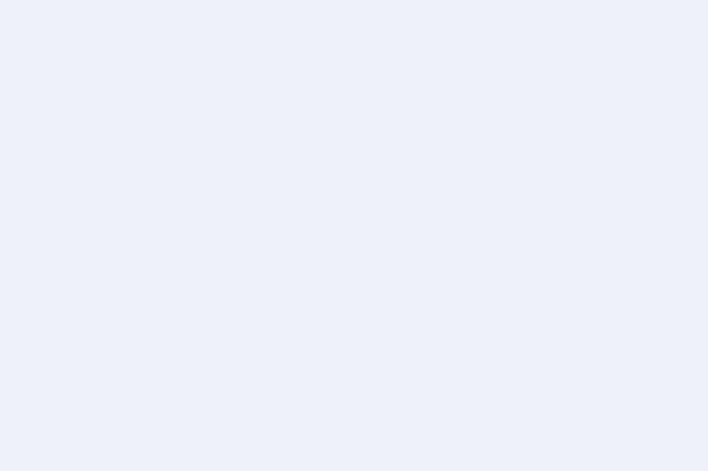

Inglês e reforço em turma pequena
A Ponte oferece inglês para crianças, jovens e adultos, além de reforço escolar. Veja os horários abertos e marque uma aula experimental.
Agendar aula experimentalServiços
- R$ 190 por mês, 2 vezes por semana
Inglês para crianças
Aulas com vocabulário e atividades adequados à idade e ao nível da turma.
- R$ 210 por mês, 2 vezes por semana
Inglês para adolescentes
Prática de leitura, escrita e conversação com situações do cotidiano.
- R$ 230 por mês, 2 vezes por semana
Inglês para adultos
Aulas para quem está começando ou quer retomar o idioma.
- R$ 65, aula de 1 hora
Reforço de matemática
Revisão de conteúdo e resolução de exercícios da escola.
- R$ 65, aula de 1 hora
Reforço de português
Leitura, escrita, gramática e apoio nas atividades escolares.
- R$ 85, aula de 1 hora
Aula individual
Encontro individual para revisar um conteúdo ou praticar inglês.
Turmas com vagas
| Inglês infantil, ter e qui, 9h | 3 vagas, aula experimental disponível |
|---|---|
| Inglês adolescente, seg e qua, 15h | 2 vagas, aula experimental disponível |
| Inglês adulto, ter e qui, 19h | 4 vagas, aula experimental disponível |
| Reforço escolar, sáb, 9h | 3 horários individuais |
Aprender perto de casa
A Ponte Idiomas e Reforço fica em uma casa adaptada no bairro Esplanada, em Governador Valadares. As turmas são pequenas para que todo mundo tenha espaço para perguntar e praticar.
No reforço, acompanhamos o conteúdo que a escola está trabalhando. Para inglês, conversamos sobre idade, nível e horário antes de indicar uma turma.

Como funciona
Conte o que procura
Diga a idade, a matéria ou o nível de inglês e os horários que funcionam.
Conheça a turma
A gente indica uma aula experimental para você ver o espaço e a dinâmica.
Escolha o horário
Com a turma definida, confirmamos dias, mensalidade e início das aulas.
Perguntas frequentes
A aula experimental tem custo?
Não. Ela serve para conhecer a turma e conversar sobre o que você precisa.
Como vocês organizam o reforço?
Pedimos o ano escolar e os assuntos que precisam de revisão. Se puder, traga o material da escola.
Tem aula para quem nunca estudou inglês?
Sim. Temos turma de nível inicial para adultos e para diferentes faixas de idade.
As turmas têm quantos alunos?
Trabalhamos com grupos pequenos. O tamanho depende da turma e do horário escolhido.
Fale com a gente
Rua Israel Pinheiro, 1.045, Esplanada, Governador Valadares - MG
Governador Valadares, MG
- Seg a sex: 8h às 20h
- Sáb: 8h às 12h
WhatsApp (33) 90000-0000
Telefone (33) 90000-0000
contato@exemplo.com.br